Pastikan alur kabel dari Mikrotik ke port Uplink GE OLT sudah benar.
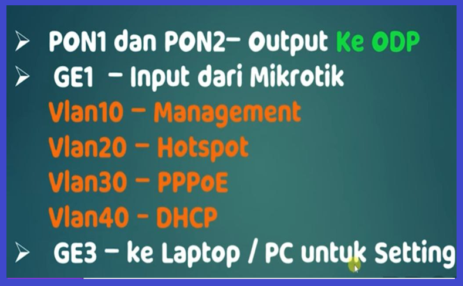
Atur IP komputer agar satu jaringan dengan OLT.
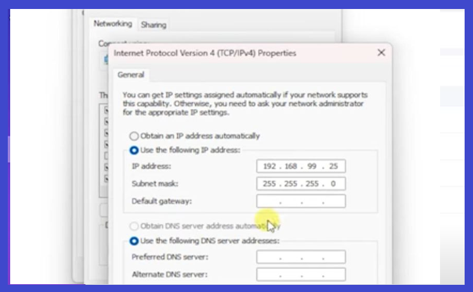
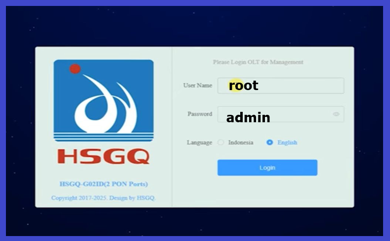
Klik menu VLAN dan tambahkan ID VLAN yang Anda butuhkan.
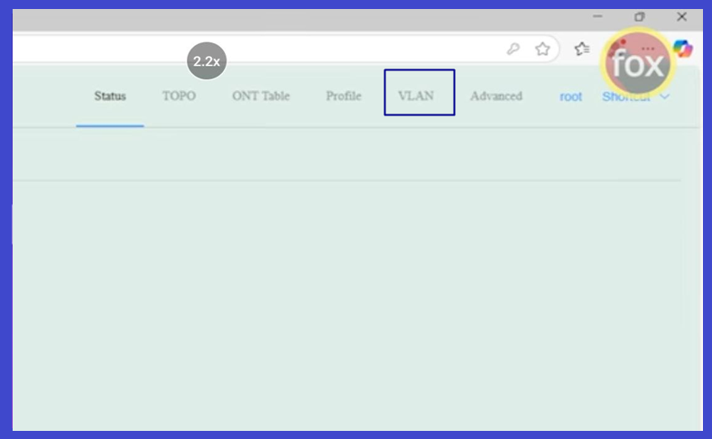
Pastikan VLAN yang dibuat sudah di-enable di sistem.
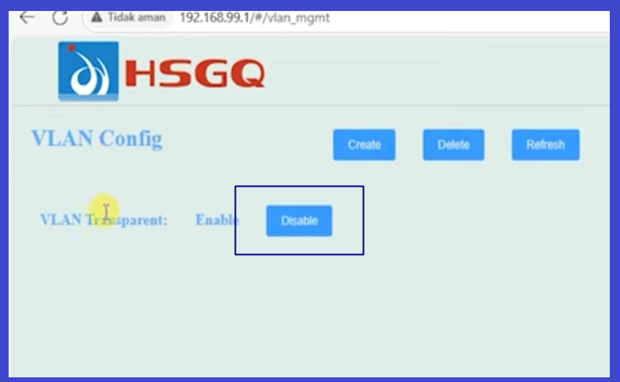
Konfigurasi pembuatan entitas VLAN pada port.
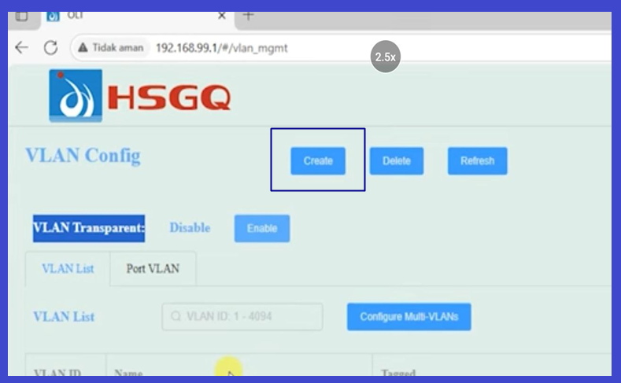
Pilih port GE (Uplink) dan PON sesuai kebutuhan distribusi.
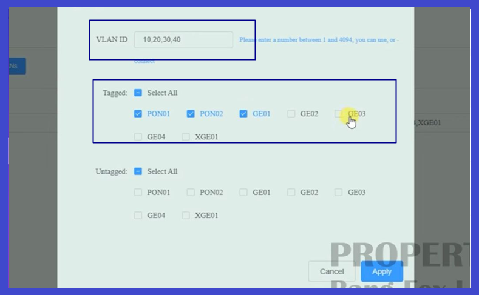
Tandai nama VLAN agar manajemen jaringan lebih mudah diidentifikasi.
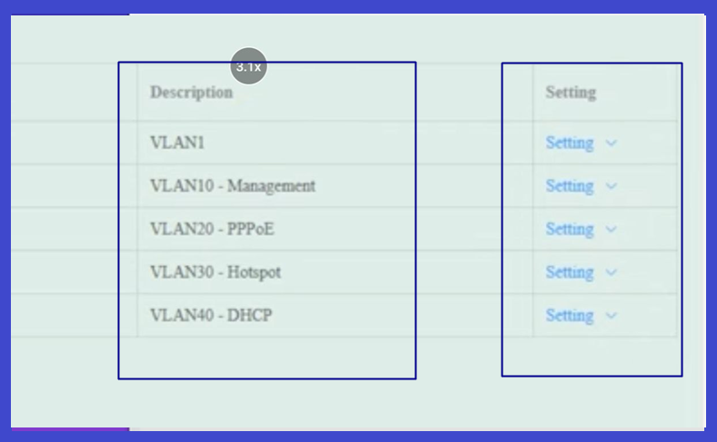
Pengaturan alokasi bandwidth (DBA). Bisa dilewati jika menggunakan default.
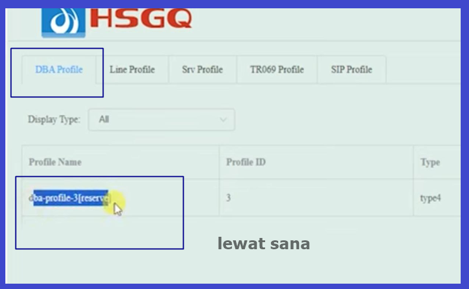
Tambahkan Line Profile untuk menghubungkan ONU ke OLT.
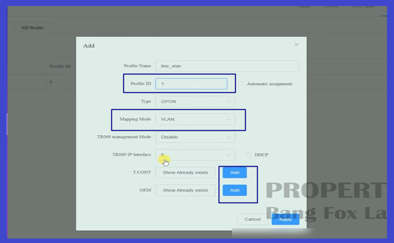
Hubungkan Gemport ke VLAN ID masing-masing layanan.
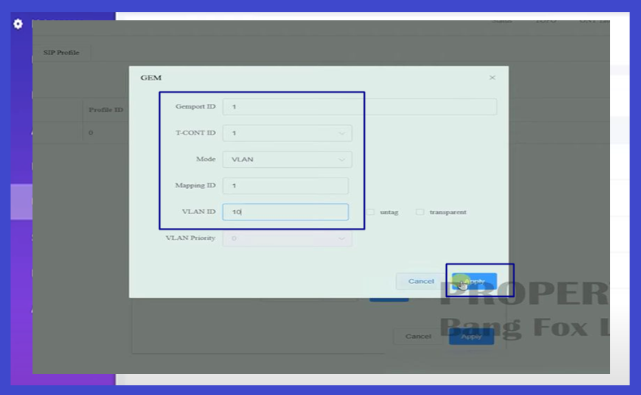
Lakukan mapping akhir antara VLAN, Gemport, dan User Port.
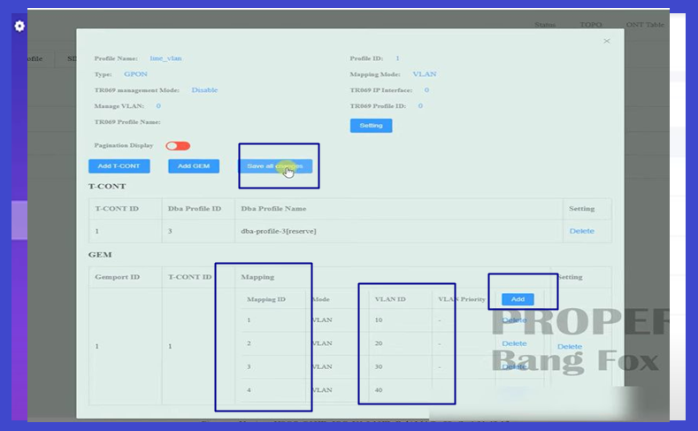
Atur IP Remote VLAN agar OLT bisa diremote dari luar jaringan lokal.
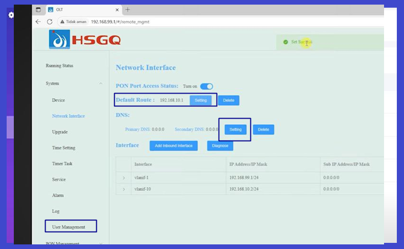
Set Waktu (NTP), User Manager, dan simpan konfigurasi permanen.